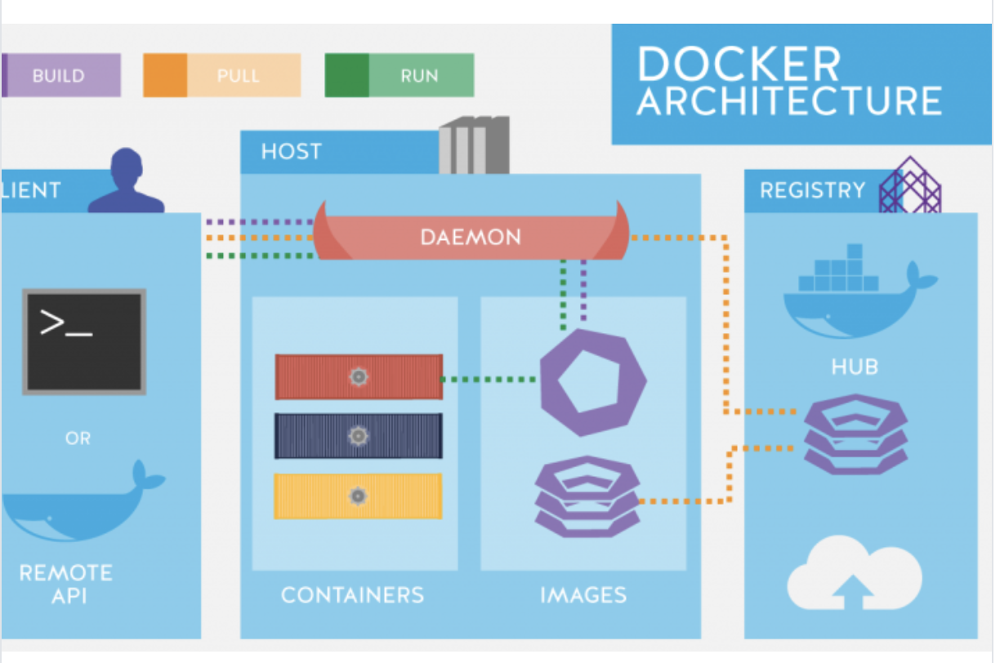

What is Docker?
Docker is an open source project that allows users to store items in containers. It allows users to isolate their apps from the environment
they are working on.
Key benefits:
Open Source software
Isolate from the environment so that no bugs occur due to local system error
Huge community of users

Docker Vs Virtilization:
Docker is basically using the OS-level virtualization, Linux namespaces and control groups, for example. Its overhead is very thin compared to a virtualization technique, like Hypervisor used by virtual machines.
VMs & Docker – each comes with benefits and demerits. Under a VM environment, each workload needs a complete OS. But with a container environment, multiple workloads can run with 1 OS. The bigger the OS footprint, the more environment benefits from containers. With this, it brings further benefits like Reduced IT management resources, reduced size of snapshots, quicker spinning up apps, reduced & simplified security updates, less code to transfer, migrate and upload workloads.
How to download Docker:
Install VirtualBox. The only component we have to install. Download the installer from the download page and run it. After the installation, reboot the computer.
Download docker-machine. We need docker-machine for creating Docker hosts in VirtualBox. Check the release page and download the latest release
Install tinycorelinux as Docker host in VirtualBox. Change the memory settings if you want to give Docker more or less memory.
Download docker-client.
Create a batch file start_docker.bat in the c:\docker folder and insert the following commands.
Add c:\docker to the system path.
Lastly, we set up shared folders. You can configure a shared folder via Command Prompt with the vboxmanage tool. In this example, I map the Windows folder c:\docker\data to the Docker host. Ensure that the folder exists before you run the command.
For more information, check https://golb.hplar.ch/2019/01/docker-on-windows10-home-scratch.html
For more information, check https://www.edureka.co/blog/docker-explained/"